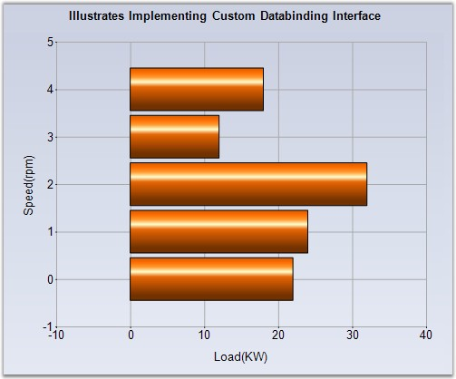

Note that the ChartDataBindModel type in the previous topic implements a simple interface called IChartSeriesModel. This interface requires the implementation of one property, two methods and one optional event. So, you can easily provide a custom implementation of this interface instead of using the ChartDataBindModel.
Shown below is some sample code that implements IChartSeriesModel interface for use with the chart.
|
[C#]
// Custom Model public class ArrayModel : IChartSeriesModel { private double[] data;
public ArrayModel(double[] data) { this.data = data; }
// Returns the number of points in this series. public int Count { get { return this.data.GetLength(0); } }
// Returns the Y value of the series at the specified point index. public double[] GetY(int xIndex) { return new double[]{data[xIndex]}; }
// Returns the X value of the series at the specified point index. public double GetX(int xIndex) { return xIndex; }
// Indicates whether a plottable value is present at the specified point index. public bool GetEmpty(int index) { return false; }
// Event that should be raised by any implementation of this interface if data that it holds changes. This will cause the chart to be updated accordingly. We don't raise this event in our implementation as our data will be static. public event ListChangedEventHandler Changed; } |
|
[VB.NET]
' Custom Model Public Class ArrayModel Implements IChartSeriesModel Private data() As Double
Public Sub New(ByVal data() As Double) Me.data = data End Sub
' Returns the number of points in this series. Public ReadOnly Property Count() As Integer Get Return Me.data.GetLength(0) End Get End Property
' Returns the Y value of the series at the specified point index. Public Double() GetY(Integer xIndex) Return New Double(){data(xIndex)} End Function
' Returns the X value of the series at the specified point index. Public Double GetX(Integer xIndex) Return xIndex End Function
' Indicates whether a plottable value is present at the specified point index. Public Function GetEmpty(ByVal index As Integer) As Boolean Return False End Function
' Event that should be raised by any implementation of this interface if data that it holds changes. This will cause the chart to be updated accordingly. We don't raise this event in our implementation as our data will be static. Public event ListChangedEventHandler Changed End Class |
Bind the above model to the chart series.
|
[C#]
//Creating series data and binding to the array model ChartSeries series1 = this.chartControl1.Model.NewSeries("Series 1"); series1.SeriesIndexedModelImpl = new ArrayModel(new double[]{22,24,32,12,18}); series1.Type = ChartSeriesType.Bar; this.chartControl1.Series.Add(series1); |
|
[VB.NET]
'Creating series data and binding to the array model Dim series1 As ChartSeries = Me.chartControl1.Model.NewSeries("Series 1") series1.SeriesIndexedModelImpl = New ArrayModel(New Double(){22,24,32,12,18}) series1.Type = ChartSeriesType.Bar Me.chartControl1.Series.Add(series1) |

Figure 26: CustomModel bound to the Chart Series
Indexed data
Note that if you have indexed data, which implies that the X values are simply categories and don't carry any cardinal value, then you can instead implement the IChartSeriesIndexedModel interface and bind it to the ChartSeries.SeriesIndexedModelImpl. The main difference in this interface is that you don't have to implement the GetX method.